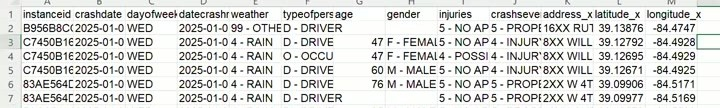

01: Introduction to BI and Data Viz
ISA 401: Business Intelligence & Data Visualization
The recording is on Canvas. Timestamps before each paragraph are hh:mm:ss into the recording; drag the player there to hear the passage.
What we covered
First class of the semester. Fadel laid out how the course runs, then used two real datasets, a year of Cincinnati traffic crashes and a harvest of analytics job postings, to walk through the analytics journey and the three shapes data comes in. Two ideas ran through the whole session: know your unit of analysis, and do not state a conclusion your data cannot support. The learning objectives on Slide 2:
- Describe the analytics journey and the role of business intelligence (BI) within it.
- Differentiate between structured, semi-structured, and unstructured data.
- Map real-world data sources to appropriate data types.
Part 1: How this class runs
00:00:19 The class is about turning data into decisions, on the premise that every company today is a data company and a technology company. It is divided into three phases. The first is getting, reading and understanding data from different data sources, and it is the most coding-oriented phase. Fadel said the choice of language does not matter much, R or Python, but historically this class has used R for that first portion. The second phase is visualization, itself split in two: the mechanical side, using about four different pieces of software so you leave with some experience in more than one tool, and then the part Fadel called the more important one, visualizing data the right way. That means how people perceive data, and making sure a reader does not take the wrong insight away from a chart because of how you presented it. The last part, roughly two to four classes depending on the schedule, uses data mining techniques not to predict but to organize and categorize data and explore it.
00:02:49 There is no final exam. The course ends with a group project, two or three people, where you do everything the semester covered: pull data from different sources, integrate them, ask interesting questions of them, and answer them. It is deliberately open-ended, which is the part students both hate and love. Fadel does not hand you a dataset. You find something you care about, and the bar for insight is real: analyzing basketball data to conclude that LeBron James was one of the best players of the last decade does not clear it. Reaching a real insight usually means merging more than one data source.
00:04:09 Every class is recorded. Fadel expects you in the room and knows 8:30 on a Monday is hard, but records so you can go back over material, or catch up after an interview or an illness. You do not have to explain an absence, though you are welcome to. For the coding sessions you are asked to log in to Zoom on your own computer, so that when you hit an error you can share your screen and the class can work through it together. The reasoning: you are probably not the only person with that error, and even people who did not hit it learn something for next time.
00:04:58 On AI, Fadel was direct about being unusual here. AI use is not prohibited on any assignment or exam. On the second exam every question will be one that has been put to an AI model, with the model’s answer supplied, and your job is to say whether it is right, wrong, or partly right, and if partly, which part. The framing was: you are paying a great deal for this education, so tell me. The concern is not use but over-reliance. If you delegate your thinking and your agency to a tool, the question becomes why anyone should hire you.
00:06:31 Canvas is organized in modules by week, nothing fancier, and the course home page links straight to them. Week 1 is live; later weeks open as they are released. Recordings go up sometime around one o’clock after class, from one of the two sections, and in classes where code is typed the code file goes up too. There will not be a syllabus day.
00:07:14 Office hours are one to three on Mondays and Wednesdays; Fadel looked them up on Canvas under Pages and thought they were probably in the course guide too. Rather than have you queue in the hallway, which Fadel called a complete waste of your time, you book a 15-minute slot through the scheduling link. Book back-to-back slots if you need longer. The point is that the 15 or 30 minutes is fully yours rather than split across four or five students at once. Booking closes about two hours ahead, so a one o’clock meeting has to be booked by about eleven. If the week is full, email and it will get worked out. Fadel is in Oxford three days a week, so a Tuesday or Thursday meeting will probably be suggested as a Zoom unless you would rather come to the office.
00:09:25 The slides are HTML rather than PDF. If you take notes on a tablet, Ctrl-P and save as PDF works. The HTML form is what lets the slides be interactive and walked through in class. The decks themselves are written in R Markdown, if you want to look at the back end.
00:10:12 The stated goal for today, beyond the three formal objectives, was to give you a feel for how the class runs and why it matters. Whatever you end up doing, you will be looking at dashboards, building dashboards, making visualizations, or interpreting them. Fadel’s aside: it is relevant even for fantasy football.
00:10:59 Alongside the analytics journey, today also gave a 10,000-foot view of why the ISA curriculum is built the way it is. On data types, the point of departure is that courses like ISA 125, 225 and 345 mostly work with data that is already tidy, sitting in a database table or a CSV, ready to analyze. That is a common source but not the only one. A manufacturer like GE Aerospace also holds warranty complaints and maintenance reports from clients, and the question of how those relate to process quality, and how to use them to improve production, is a real one. In marketing, a preliminary market analysis mixes numbers with text you have to digest. Part of today is mapping those sources onto data types.
Part 2: ChatISA and the AI comparison
00:12:31 Slide 3 lays out ChatISA, the tool Fadel has developed and maintained since August 2023 for ISA students. The slide as shown was slightly behind: another module was added the week before class. It is not ChatGPT and not Claude; it is access to 17 or 18 different large language models, some open-weight and some commercial, paid for through the department so you are not paying twenty dollars for Claude, another twenty for ChatGPT and ten for GitHub Copilot. You are free to pay for your own tools; this is there so you do not have to. Some assignments will nudge you toward specific modules: an online portfolio you can share with employers, or Job Scout for jobs that may not appear on Handshake. Fadel does not track who uses it.
00:13:49 The modules that will come up during the semester are the Coding Tutor, the Coding Studio, and, today, Job Scout. Job Scout connects to two different APIs and pulls jobs, focused mainly on ISA-type roles. If you are a double major you will not find much finance or supply chain, though some postings share keywords with analytics and IS jobs. From there you can have AI tailor a resume or cover letter to a posting.
00:14:26 The word of caution at the bottom of Slide 3 got its own emphasis. AI tools give you the right answer for 90 to 95% of applications. The problem is the other 5 or 10%, where the wrong answer still looks convincing. It usually does not come back as an error; it comes back as something plausible. That is why your own understanding has to be good: you do not have to be a software developer to do interesting things, you have to understand the business, but when the tool makes a wrong assumption you need to be able to spot it.
The activity: Claude Opus 5 vs GPT-5.6 Sol
00:15:48 The first activity, on Slide 5, is a head-to-head comparison. Go to https://chatisa.fsb.miamioh.edu and sign in with your Miami account. The login is gated to @miamioh.edu accounts so the API credits being paid for go to Miami students. Sessions do not carry across machines, so signing in on your laptop does not bring over what you did on another computer.
00:16:39 From there, open the AI Comparison module, at the end of the module list. Pick two models: Claude Opus 5, which is the second-highest Claude model available in ChatISA, and GPT-5.6 Sol, the highest OpenAI model available in ChatISA and the highest OpenAI offers publicly. Ask both the same single question from the slide:
I am taking a business intelligence (BI) course. Give me a short definition of business intelligence. Create a flowchart that captures this process.
00:17:21 The module is built so you can compare either blind, if you want to know whether you like a model you have not used before without knowing which it is, or with a model you already use as the baseline, to decide whether the twenty dollars a month you are spending is still worth it. Click Compare and both answers stream in. In class the differences were in speed, in how each laid the answer out, and in how each rendered its flowchart. The flowcharts come back as Mermaid, so you can copy the block into an online Mermaid renderer to see the diagram drawn.
00:18:53 Then the class voted on the Class Poll tab, at menti.com with code 1781 1839: which model’s output did you prefer? The result was close. The poll showed percentages only, 53% for Claude Opus 5 against 47% for OpenAI’s GPT-5.6 Sol, and Fadel read that out loud as maybe 18 people, roughly nine to eight, and made the point that there is not a lot of difference in performance between the two. What does differ is cost. From Miami’s point of view, the model that Fadel described as cheaper to run than Opus is worth noting when you are choosing which to use.
00:21:01 The Notes tab on that slide is an editable panel, and most activity slides have one. You can type into it during class. It saves to your browser’s local storage, so it persists between sessions on the same machine but does not follow you to a different computer. Ctrl-R clears it.
Part 3: The analytics journey
Pre-analytics: the Cincinnati crash data
00:21:37 Cincinnati publishes a lot of city data, including traffic crash reports. Fadel took an extract of the last full year available, 2025, and posted it on Canvas under the Week 1 module. Slide 7 links both the source page on the Cincinnati open data portal, which carries the metadata describing what each field is, and the Canvas download of the extract.
00:22:16 The activity: shake hands, fist bump, whatever you like, introduce yourself to the person next to you, and work through four questions together. How many crashes are in the dataset? How many variables? What dates does it cover, minimum and maximum? Which day of the week appears most, and what does that mean from a driving-safety perspective? Eight minutes on the clock, roughly six to work and two to discuss. Method was left entirely open: Excel, R, ChatISA, whatever you like. Type your answer into the Your Solution panel on the slide.
00:25:31 A practical note: on Mac laptops the downloaded CSV opens in Numbers by default. Right-click and Open With gets you into Excel. Fadel did not change the default application so that the other section would see the same behavior.
00:28:51 On the debrief, the count of variables came back as 13, one per column. The date range is January 1 2025 to December 31 2025, which is the full year Fadel had said the extract covered. As it turns out there was a crash on the first day of the year and one on the last, so both endpoints are real.
00:29:50 The crash count question is where the class slowed down. A student gave 14,962. Fadel did not commit to an exact figure in the moment, and the reason matters more than the number: every row of this dataset is not a crash.
00:30:55 This is the term to write down and expect all semester: the unit of analysis. In plain English, what does one row mean, and is that what you want? Here, scrolling into the file, three consecutive rows share the same instanceid and the same crash date. What changes between them are the person columns.

00:31:47 Reading those rows, this is a two-car crash. One car had a driver and an occupant, the other a single driver, and the file reports injury severity for each of the three people involved: a 47-year-old female driver, a female occupant of the same age riding with her, and a 60-year-old male driver. So the unit of analysis is a person involved in a crash, not a crash. Whatever tool you use, Power BI, R, Python, Excel, counting crashes means counting unique instanceid values.
00:33:05 The same logic applies to the day-of-week question, and Fadel was open about having asked it loosely. If the question is about crashes, you first reduce the data to one row per instanceid, keeping roughly the first few columns, and then count days. That is the more appropriate route. As best Fadel recalled, the answer comes out the same either way: Friday.
Counts are not rates
00:34:02 Then the harder question: so what? If Friday is the day with the most crashes, and you are reporting that, what exactly do you write? A student offered that, statistically, more people get in accidents on a Friday than any other day of the week. Fadel’s response was that this is technically not wrong, and that is precisely the trap. As a headline it leaves the reader with the wrong impression. Put it in a report, let an agency pick it up, and it becomes “people drive badly on Fridays, take care.”
00:34:36 The sharper version of the question is: is it more dangerous to drive on a Friday than on another day? And how would you answer that, if money were no object? The answer is rates, not counts. You need a denominator: how many cars were on the road on Fridays, and what fraction of them were in a crash. Suppose a million cars are out on an average Friday and 500,000 on an average Monday, and Friday’s crash count is only 1.2 times Monday’s rather than double. Then, given that you are already driving, your chance of being in a crash is higher on Monday.
00:37:19 Fadel was careful to say this is not a claim that Friday is safe. We simply cannot assess it from this data, because we do not have the denominator. Traffic studies usually do not use the number of cars either; they use vehicle miles travelled, because someone driving 100 miles has more exposure than someone driving one mile. Normalizing by miles driven gives the better model.
00:38:03 Two takeaways from the exercise, and Fadel named them as the main ones: know what your unit of analysis is, and when you make a statement, be precise enough that you are not implying something the data does not support. This is the business-logic layer underneath all the mechanical work the course does, and the piece not to lose. It is also why the datasets in this course will be real rather than canned.
Pre-analytics as a stage
00:38:36 Fadel frames the analytics journey in four steps. The first, casually called pre-analytics, is the process of getting data; in industry it is often the data engineering job. You pull from multiple sources and put the result in a shape people can consume. Slide 8 makes the same point with the contrast between canned data, the iris and mtcars of the world, which is stale but convenient, and fresh data from places like the Cincinnati or Ohio open data portals, which is interesting and messy. Real data brings real problems: the unit of analysis is not what you assumed, so you preprocess; the data is not clean, so you clean it.
Descriptive: what the data says
00:39:37 Slide 9 shows the counts once the data is reduced to unique crashes. By day of week, Friday is highest at 2,380, though not by much against Wednesday at 2,327 and Thursday at 2,285, with Monday at 2,020 and Tuesday at 2,241; Saturday at 1,866 and Sunday at 1,664 are the light days. Fadel contrasted this with the counts on the full person-level data, where the Friday total is several thousand higher.
00:40:06 The weather table on the same slide makes the denominator point a second time and more cleanly. Clear weather accounts for far more crashes than any other condition, 10,437 of them, against 1,991 cloudy, 1,661 rain, 476 snow, and single digits for sleet, hail, freezing rain and severe crosswinds. Sleet or freezing rain is probably more dangerous to drive in, and more slippery. It produces almost no crashes because almost nobody is out in it. Same lesson: the count is telling you about exposure, not about risk.
00:40:36 Descriptive analytics is where this course lives. It is the same statistical summarizing you did in ISA 225, plus the ability to carry that summary in a visual language instead. Slide 10 is a bar chart of the same day-of-week counts. Could it have been a different chart? Yes. Fadel also made a deliberate decision not to sort the bars in descending order by count, because in this case a reader reads Monday, Tuesday, Wednesday more naturally and can compare up and down the list from there. The claim was not that this is the perfect choice; the claim is that it should be a choice. Not something you kept because Tableau or Power BI handed it to you that way, or because ChatGPT or Gemini returned that chart. You can ask for it to be changed.
00:41:52 Slide 11 puts the whole year on a calendar, one cell per day, darker for more crashes. The weekday pattern from the bar chart shows up again as visibly lighter Saturday and Sunday columns. Fadel also picked out a cluster in late October, around Halloween, with more people involved in crashes, and said plainly that the reason was not known. The daily range runs from the lightest days, which Fadel put at fewer than 15 or 20 crashes, up to about 90 on the darkest; the legend on the slide is labelled 30, 50, 70, 90, so the lightest cells sit below its lowest tick.
Predictive and prescriptive
00:42:57 The third step is predictive analytics, which asks what will happen. Do the patterns from 2023, 2024 and 2025 carry into 2026? The curriculum answers that with statistical models, machine learning models, and forecasting models. The caveat Fadel attached: junk in, junk out. Everything you did in the data management and exploration stages, making sure you have the right data, making sure you are not making inferences about people involved in crashes when the question was about crashes, propagates forward into the model.
00:43:46 The fourth step is prescriptive analytics, which asks what we should do about it. If you are the Cincinnati Police Department: more traffic stops, more enforcement of the speed limits, more checks for impaired driving. You have limited resources, so you do not apply the same effort everywhere. Perhaps four patrol cars on a Monday and five on a Friday. The point is turning the model into an allocation that reduces the chance of a crash.
Where the ISA curriculum fits
00:44:46 Slide 13 is Fadel’s own mapping of the ISA courses onto those four stages. ISA 345 is the main data management course, covering databases, database design, schema types, and extracting information from them; it is a prerequisite for this class. ISA 401 and ISA 414 both spend time getting data out of other sources, APIs and web scraping, but for different ends: 414 goes on to analyze that text with natural language processing, while here the goal is to get the data into a form you can hand to a dashboard, and to build your own dataset. On the descriptive side, ISA 225 is the statistical treatment and ISA 401 is the visualization one, including interactive visualizations and dashboards. ISA 391 uses statistics to explain what happened in the past. ISA 491 is the machine learning and data mining course, the one that answers a question like: given a Friday in the mid-70s with the Reds in town and nice weather, how many crashes should I expect? ISA 444 is the trends-over-time course, where time itself is part of the fit; Fadel’s made-up example was Cincinnati’s population rising 15% over a decade and whether crashes rose proportionally. On the prescriptive side, ISA 321 is mathematical modeling and optimization, allocating a limited budget across choices you have predictions for, whether that is stocks or a fantasy football roster. ISA 365 is experimental design, the course that lets you answer whether changing the color of Amazon’s purchase button actually did anything, through A/B testing.
Part 4: Business intelligence, from data to decisions
00:47:43 Business intelligence and data visualization are the two terms in the course name. Fadel’s working definition of the first is the process of going from data, to information, to knowledge, to decisions. Slide 15 gives the textbook version, from Sharda, Delen and Turban: interactive access to data, sometimes in real time, the ability to manipulate it and run appropriate analysis, and the transformation of data into information, then decisions, then actions. The image on that slide is a stock market prediction tool built with Bin Weng.
00:48:41 Slide 16 is the process diagram, and Fadel’s gloss was that you should not picture one person at a computer. You have data sources that need organizing and a standardized way of capturing them. That goes into a database or a data warehouse. On top of the warehouse you build interfaces, dashboards in Power BI or whatever tool you like, so that managers and decision makers can generate insights without writing code. Those dashboards can be retrospective, aggregating last month or last quarter, or they can be real-time.
00:49:35 Which one you build depends on the decision being supported. Data for a staffing or configuration decision looks quite different from data for a strategic choice about where to put the next warehouse. The aggregation is different and the unit of analysis is different. That is the thing to stay aware of.
The Job Market Explorer
00:50:05 Slide 17 embeds a dashboard Fadel built from the Job Scout side of ChatISA. Job Scout harvests new postings every Sunday; this extract is the one from the Sunday before the previous one, retrieved August 16 2026 per the slide’s footnote, and holds 1,437 postings from the ActiveJobs and USAJobs APIs. Moving your cursor over the dashboard reads out the counts. Because postings expire, there is a posting-status filter, and with it set to Still Active the dashboard shows 781 of the 1,437.
00:50:55 The activity on Slide 18 gives you a few minutes to explore the dashboard, start in the Job Explorer tab and find one posting you would actually apply to, internships count, and then answer two Mentimeter questions. What is one question you would want this dashboard to answer to help you make a career decision? And what is one question you would ask about the data itself before trusting the answer? Fadel thought the full dashboard had also been posted to Canvas but was not certain, and the standalone full-page version is linked from the slide either way.
00:51:36 The framing is the same one the crash data got. Having data does not mean you can do everything with it, and noticing where it runs out is what tells you which other source you need to bring in.
00:52:12 Alongside the dashboard, Fadel walked through building a profile in Job Scout itself. You tick the ISA courses you have taken or are taking, grouped by level, and the skills panel on the right fills in as you go: each skill is marked Strong or Working and lists the courses it came from. The assumption for a 400-level class is that you have had ISA 125, 225 and probably 345, with 391 less certain. Then save. Without saving, nothing sticks.
00:53:09 With courses saved you get a list of matching jobs. Fadel was frank that the ordering is not good yet: postings where you match more skills can end up below ones where you match fewer. You can filter full-time against internships. The postings are real, so clicking one takes you to the actual ad, and some have already expired and come back as no longer available. Fadel noted that a still-available filter would be a sensible thing to add.
00:58:06 A student asked mid-activity how to get back to the page where you enter your classes. The path: ChatISA, then Job Scout, then My Profile, then tick the courses and save. Unticking a course removes it again.
00:58:50 You can also add skills by hand rather than only inheriting them from courses. Fadel’s examples: mark a strong foundation in probability if you have one. Communication in particular is not captured explicitly from any course, but as an FSB student you have done a lot of presentations and some technical writing, and as a Miami student at a liberal-arts-style school problem solving and communication are probably things you are already strong in. Put them in yourself.
What the class asked of the dashboard
00:59:56 The responses that came back clustered on two things: expected salary for a position, and how to close a gap when a posting wants a skill you do not have. On the second, Fadel said there is an idea already: since each course has skills attached to it, the tool could run that mapping backwards and tell you which two courses would build your machine learning or AI skills. On salary, that is genuinely not in the data, and the rest of the class was built on that gap.
01:00:31 Fadel was explicit that the student answers were all fine and not what was being complained about, but pointed at a different thing the visualization supports. Because the harvest was aimed at ISA-type jobs, this is not the whole market. Fadel also tried to filter to postings asking for zero to two years of experience as a proxy for entry level, and said plainly it does not work consistently, because the underlying text is unstructured and does not say it the same way twice. What the dashboard is good for is the question of whether your skills are usable, what you should improve, and how that informs which classes you take next semester, whether you have one semester left or three.
01:01:54 The limitations, stated as such: there is not much salary information, and the skills were extracted by an AI model, so they are imperfect and would need cleaning. With that said, moving from the whole job market to some insight about the job market has utility.
01:02:40 And the reason for spending class time on it. Fadel will bring in charts from the news during the semester, and said the politics behind them are not the point. As an ISA student, minor or major, you should be able to look at a visualization and say whether the data behind it supports the conclusion being drawn. When someone puts a chart up in a board meeting or a technical meeting, that is your job in the room. It is a hard skill, not one you read out of a textbook, which is why examples will keep arriving. Exam 2 is exactly this exercise with AI outputs: Fadel will supply the recording of the prompting so you can see nothing strange was done, and then ask you how the models interpreted the data.
One job ad, three shapes
01:03:51 The last big idea of the day uses a single posting to show the three data types. Slide 19 is the job ad as a human, or Job Scout, actually reads it: Research Data Scientist on the Magic Eye team at Google, Mountain View, posted 2026-08-12. It wants a master’s in a quantitative field and three years of experience, which puts it outside the entry-level window Fadel was aiming for, and an MSBA student might be qualified. The ad has a salary range in it, and responsibilities, and a description of the team. That is a lot of information, but it is unstructured: free text, no fixed fields, and none of it readily consumable. As the slide’s footnote puts it, the salary is right there in the text and no filter or chart can reach it until someone or some model extracts it.
01:05:07 Slide 20 is the same posting after Job Scout’s model has read it: a JSON list of skills, each one a skillId with an importance of required or preferred. Fadel called this semi-structured, and gave the reason: skillId repeats. It is not yet something you can drop straight into a CSV table, because you have to decide how to handle the repeats. Do you comma-separate them into one cell? Do you repeat the job ID and make the data long? Those decisions are what stand between this shape and a data table. This ad carries 12 skills; another might carry 4, which is exactly what makes the shape flexible. JSON, JavaScript Object Notation, is what a great many APIs return, and parsing it is a few weeks out.
01:06:23 Slide 21 is the structured version: one row in the scout_postings table, with source, title, company, location_city and location_state, posted_at, category, and so on, the same fields for every posting. For the skills, Fadel said the approach would be to key them by the posting ID and repeat that ID once per skill, making a long table. That shape lets you count how many skills a job asks for, and lets you ask how many jobs require problem solving. It is the easiest way to consume that information. Worth noticing on this slide: there is no salary column. It did not survive the trip.
01:07:25 Slide 22 puts the three side by side. Unstructured is the job ad, and it does not have to be text; it can be audio or video. You get at it with text mining, or with an LLM, or with regular expressions, which is what ISA 414 teaches. Semi-structured is the JSON, which is what APIs hand back, and it is also what you should ask an LLM for when you are using one to extract information, precisely because it is more structured than free text. Structured is the database row, which you work with in spreadsheets, SQL, or R data frames. Much of this course is about moving data from left to right.
01:08:22 Slide 23 is why one source is rarely enough, and it starts from the salary question the class raised. Suppose Google will pay $200,000 in San Francisco for a role wanting a master’s and three to five years. That is all good, but it means something only next to comparison data. If similar jobs with the same qualifications in that area pay $160,000, the $200,000 is very good. If the average is $200,000, it is just the going rate. So you supplement with something like BLS wage data, or levels.fyi for tech salaries, and check whether it is consistent with what other companies pay in that location. Salary depends on location, on experience, and on field, and having that context is what would let you actually assess these postings.
01:10:07 Slide 24 is the value chain in four rows: what happened, which is raw facts; what does it mean, which is context; why did it happen, which is patterns; and what should we do, which is action. Fadel ran the job data through it, and flagged the numbers as real rather than invented. Roughly 1,400 postings, of which maybe 700 or 800 were active. SQL was tagged in 31%. Communication appeared in 79%.
01:10:44 The decision that follows: because these are ISA-type jobs, there is an expectation of business relevance alongside the technical work. So learn to code, build on what ISA 345 started, extend it in 401 or 381. And at the same time do not forget you are not a developer. Your value added is being able to explain what these things mean so the business can make better decisions. That is the move from 1,400 raw postings to a summary of what they say, to a decision about how you spend the rest of your degree.
Part 5: So what is data visualization?
01:11:49 With about nine minutes left, the short definition: data visualization is the process of presenting data in some graphical format.
01:12:03 Slide 26 carries an animation of Cedric Scherer’s ggplot, where a single dataset is redrawn again and again. The point Fadel drew from it is that this iteration has become very cheap now that LLMs can both search and write the plotting code, so there is no excuse for settling. Do not stop at “I made this chart because I know how to do a boxplot in this software.” Ask whether it is the right level of detail and what is missing, and use AI to push the visualization further. That part is on you, and being meticulous is what makes a chart show the data better.
01:12:58 Slide 27 lists the goals. Recording information, which sometimes means a table, and Fadel noted you can combine visualizations with tables. Analyzing data. Communicating it to other people. And interacting with it, which is what a dashboard adds: you can ask your own question. The example given was going to the Job Market Explorer and asking how many jobs requiring data visualization sit in the Midwest, picking Ohio, Illinois, Michigan and Indiana, and getting back the counts and the skills for exactly that slice.
The 1854 cholera map
01:13:47 Slide 28 is the classic example, and Fadel pulled two separate lessons out of it. The first is the story. This is one of the first maps built for the purpose of data analysis, made in the 1800s in London by a physician named John Snow, who plotted where the people who died of cholera lived. If you watch crime shows you have seen the same move. What Snow noticed was a clustering of deaths around the Broad Street intersection, and when he went to that area there was a well. The prevailing hypothesis at the time was that cholera came from the air. Snow’s hypothesis from the map was that it was waterborne. They shut the well down, the numbers came down, and later analysis confirmed that dirty water causes cholera. That is storytelling driving a decision.
01:15:10 The second lesson is a term that will run through the semester: data encoding, meaning how the data you have gets turned into marks on a chart. On this map, as on any map, the encoding is x and y position: the coordinates carry where each person lived. Each person is then represented as a circle. That is the whole encoding, and the slide’s note adds that we perceive position more accurately than other encoding channels.
Critiquing the Top Skills chart
01:16:04 Slide 29 turns the same questions on a chart from our own dashboard, the interactive Top Skills bar chart. Start with what data is represented and what the unit of analysis is. What you have is a categorical variable, the skill name, and a count. Arguably three variables rather than two, because the count is split: the dark red segment is the number of postings where the skill was required, the lighter pink the number where it was preferred. Add them and you get the total for that skill. For communication that total is 1,130, out of the 1,437 postings, though Fadel hedged on the exact figure out loud. So the underlying table has one row per skill, with a required count and a preferred count.
01:17:25 The encoding, then: the length of the bar carries the total number of jobs asking for that skill, and position on the y-axis carries rank, so communication is at the top, then problem solving at 902, then data analysis at 741. Whether that encoding is effective Fadel deliberately left with you. Two concrete directions were offered. You could use color to group technical skills against softer or communication skills, rather than spending it on required versus preferred. And you could print the required-versus-preferred split, because the bars already carry the total but you cannot read off how much of communication’s 1,130 was required and how much was merely preferred.
01:18:53 Slide 30 is a chart taken from the wild, a Heritage Foundation infographic headlined “What If a Typical Family Spent Money Like the Federal Government?”, with the same three questions attached. Fadel stopped rather than rush it, and asked you to take a stab at it before next class so we can go through it together.
01:19:04 One clarification on the wording of those questions, because it matters for how you answer. When the slide asks what data is represented, the question in plain English is: if this were an Excel file, what would the columns be? Then, how is each of those columns visually encoded? Then, is that encoding effective, which is where the next class picks up.
Recap and what comes next
01:19:25 Slide 32 restates the three objectives, and along the way the class practiced the skills underneath them: finding the unit of analysis, telling counts apart from rates, questioning where data came from, and reading a chart’s encodings.
01:19:55 Fadel closed on pacing, prompted by something noticed during class. If you think the pace is too fast, say so. The expectation is that you show up and understand the material, and whether that means we get through two slides or all of them does not matter. That only works if you speak up.
Editorially: class ran out of time before the last few slides, so nothing below was said aloud. Slide 34 lists the optional prep for next class, which is R basics: the Introduction and Workflow Basics chapters of R for Data Science, and a gentle introduction to LLMs if you are curious. None of it is required. Slide 35’s Assignment 01 on Canvas is.
Questions from class
00:55:26 A student asked where to find the dashboard outside the slide. Fadel opened the standalone full-page version from the link on the slide, which is the same dashboard with the whole browser window to work in, and confirmed everything in it is clickable: the skills chart, the Job Explorer tab, and the Behind the Data tab that shows how the postings were collected.
00:58:06 A student asked how to get back to the page where you enter the classes you have taken. From ChatISA, go to Job Scout, then My Profile, tick your courses, and save. The save is easy to forget and nothing persists without it.